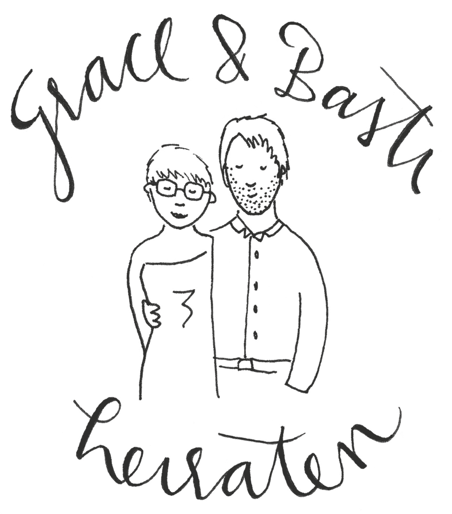

Die wichtigsten Eckdaten:
- Treffpunkt ist um 15:00 Uhr am großen Bornhorster See. Bei Regen sorgen wir entweder für Plastikponchos oder wir starten direkt im Landhaus Etzhorn.
- Danach fahren wir mit dem Fahrrad zum Landhaus Etzhorn. Meldet euch, wenn ihr noch Fahrräder sucht, dann fragen wir im Freundeskreis.
- Dort feiern wir bis in die Puppen.
- Dresscode ist feierlich. Wir kommen hochoffiziell in Anzug und Brautkleid.
- Anreisende können besonders bequem im Etzhorner Krug übernachten. Das ist direkt neben dem Landhaus Etzhorn.
- Wer Lust hat kommt am nächsten Morgen noch mit zum Frühstück in den Etzhorner Krug.
- In der Nacht wird ein paar Mal ein Sammeltaxi zurück in die Stadt fahren. Fahrräder können wir bequem am nächsten Tag in einem Transporter zurück in die Stadt bringen.
- Wir freuen uns tierisch auf euch!